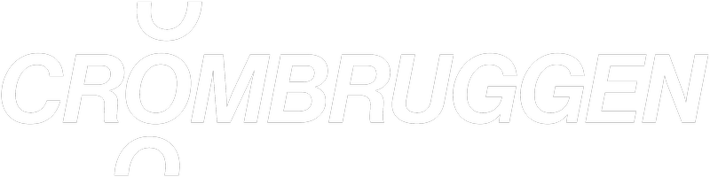
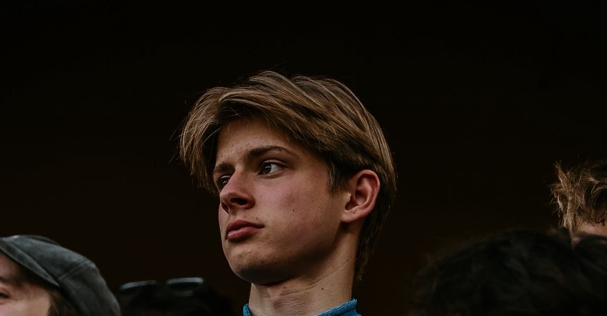
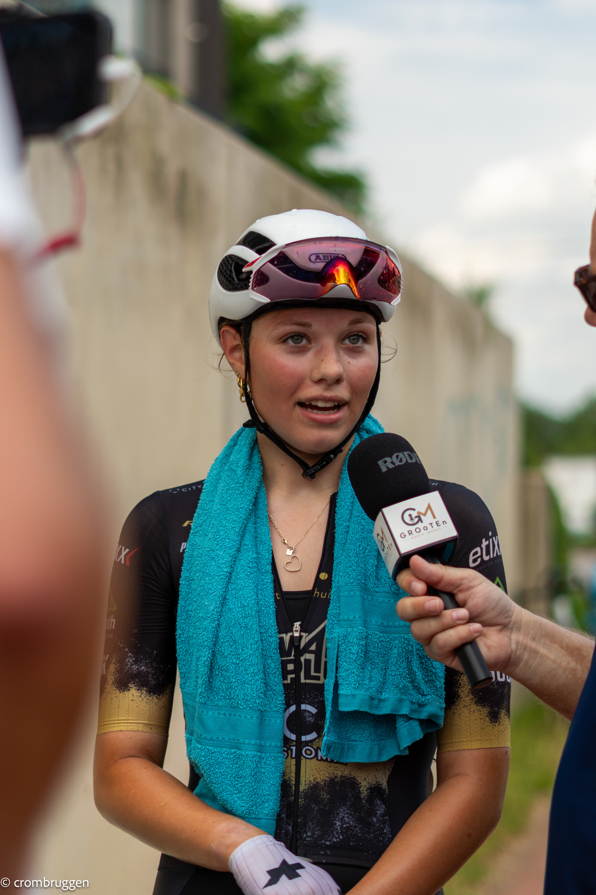

01
Video producties
Ritme, sfeer en verhaal. Beeld en geluid samengebracht tot iets dat blijft hangen.
Bekijk projecten


Over Senne
Hey, ik ben Senne. Met fotografie en video leg ik échte momenten, mensen en verhalen vast.
Van eerste gesprek tot afgewerkte beelden. Zo verloopt een samenwerking.
We bespreken je idee, verwachtingen en de sfeer die je voor ogen hebt. Zo weet ik precies waar we naartoe werken.
Ik werk een plan uit: moodboard, locaties, timing en shotlist. Alles staat klaar voor de draaidag.
Op de dag zelf leg ik alles vast, ontspannen, natuurlijk en met oog voor de kleine momenten.
Een zorgvuldige selectie en edit, afgeleverd en klaar om te delen op elk kanaal.
Ritme, sfeer en verhaal. Beeld en geluid samengebracht tot iets dat blijft hangen.
Bekijk projecten
Portret, reportage en evenement. Echte momenten, natuurlijk vastgelegd.
Bekijk projecten
Van ruw materiaal tot een afgewerkt geheel, met oog voor timing en detail.
Bekijk projecten